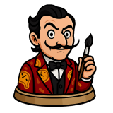
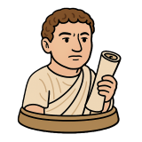
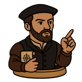
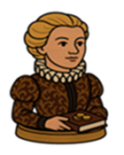
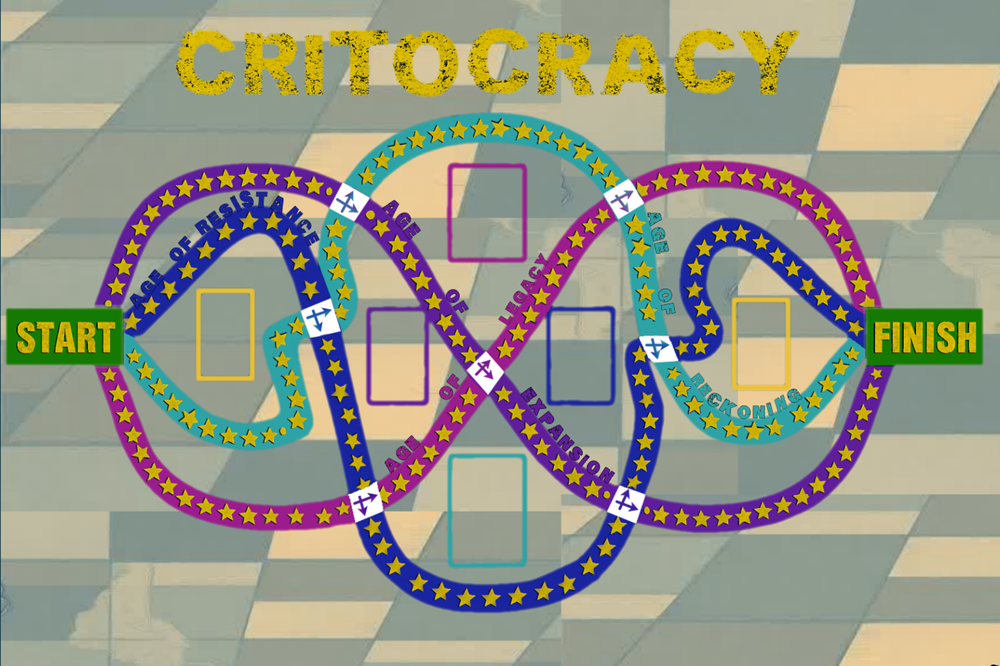

Critocracy is a strategy board game focused on critical thinking, consequences, and decision-making under changing conditions. Players take on different ideological and historical roles that shape how they interact with the game. The goal is to collect and maintain Money, Knowledge, and Influence throughout the game. However, success is not just about accumulation but also about survival. If a player reaches zero in any resource, they are eliminated. The game is built around the idea that the same situation can affect different players in very different ways. Each role interacts with systems differently based on strengths and weaknesses. The winner is the player with the highest combined resources at the end.
The game board is made up of four separate linear paths that players choose from rather than progress through sequentially. Each path represents a different way of interacting with systems, consequences, and decision-making. Players do not move through Ages in order but instead commit to a direction of play. Each path contains event spaces that shape outcomes differently depending on role. The structure emphasizes that choices matter and lead to different experiences. Some paths reward risk while others reward stability or adaptability. The board is designed to create unequal outcomes based on perspective. This ensures that no single strategy guarantees success.
The Age of Expansion is one of the four possible player paths. It focuses on growth, resource accumulation, and system expansion. Players who choose this path often gain Money more easily than other resources. However, expansion also introduces instability and resistance from other systems. Events on this path may reward aggressive decision-making. At the same time, those decisions can create long-term consequences. Different roles experience Expansion differently depending on their strengths. This path emphasizes the trade-off between power and risk.
The Age of Resistance is a path focused on opposition, disruption, and challenge to established systems. Players on this path often interact with events involving conflict and structural pushback. Knowledge and Influence become especially important in this path. Some players may gain advantages through strategic resistance, while others struggle with instability. The same events can produce different outcomes depending on role abilities. This path highlights how resistance can both empower and limit players. It forces players to adapt constantly to changing conditions. Success depends on flexibility and awareness of consequences.
The Age of Reckoning is a path focused on consequences, reflection, and accountability. Players encounter situations where earlier decisions affect current outcomes. This path often challenges players to manage all three resources carefully. Mistakes made earlier in the game can become more significant here. However, careful planning can also create opportunities for recovery. Different roles may interpret the same event in different ways. This creates unequal consequences for identical situations. The path emphasizes that actions always have long-term effects.
The Age of Legacy is a path focused on interpretation, influence, and long-term impact. Players engage with systems that reflect how actions are remembered or interpreted. Technology and communication play a major role in this path. Some events allow players to gain resources through visibility or influence. Other events may reduce resources due to reinterpretation or misrepresentation. Each role experiences Legacy differently depending on strengths. This path emphasizes how meaning changes over time. It highlights the idea that control over interpretation is a form of power.
The game includes a board made up of four selectable paths. Players use role cards to define abilities and starting resources. Resource tokens track Money, Knowledge, and Influence throughout the game. Event cards introduce situations that require decision-making. There are two types of event cards that affect gameplay differently. A six-sided die is used to determine movement. Each component is designed to support variability and consequence-based gameplay. Together, they create a system focused on interaction and choice.
Players can choose from six roles that shape how they interact with the game systems. Each role has different starting resources and abilities. These differences ensure that players experience the same events in different ways. Roles also interact differently with resource gains and losses. Some roles are better at accumulating Money while others focus on Knowledge or Influence. Each role has a direct opposition that affects certain interactions. These oppositions prevent simple dominance strategies. Role selection is an important part of early game strategy.
Starting Resources: 14 Influence, 8 Knowledge, 0 Money
Special Ability: Gains Knowledge Faster
Opposition: Entrepreneur

Starting Resources: 14 Knowledge, 8 Money, 0 Influence
Special Ability: Immune to knowledge theft
Opposition: Politician

Starting Resources: 14 Money, 8 Influence, 0 Knowledge
Special Ability: Immune to influence theft
Opposition: Revolutionary

Starting Resources: 14 Money, 8 Knowledge, 0 Influence
Special Ability: Gains Money Faster
Opposition: Artist

Starting Resources: 14 Influence, 8 Money, 0 Knowledge
Special Ability: Immune to money theft
Opposition: Historian
Starting Resources: 14 Knowledge, 8 Influence, 0 Money
Special Ability: Gains Influence Faster
Opposition: Colonialist
At the start of the game, each player selects one of the available roles. Players receive starting resources based on their role selection. Event cards are shuffled and placed according to their type. Each of the four paths is prepared on the board before gameplay begins. Players determine turn order by rolling a die. The highest roll goes first. Tokens are placed at the starting position for all players. Once setup is complete, the game begins immediately.
Each turn begins with a player rolling a six-sided die. The player moves along their chosen path based on the roll. Landing on a regular space produces no effect. Landing on an event space triggers a card draw. Players must resolve all effects immediately after drawing cards. Some effects influence resources directly. Other effects change future decisions or interactions. The game continues until all players reach the end space.
| Mechanic | Type | Description | Result |
|---|---|---|---|
| Board | |||
| Spaces | Choice Event | These spaces are not marked in any special way on the board so landing on them is a surprise. | If a player lands on a Choice Event space you draw a card from the deck that corresponds to the path you are on. |
| Regular | These are all the spaces that are not Choice Event Spaces | When a player lands on a regular space player only draws a card from either of the End Of Turn (yellow) decks | |
| Points | |||
| Cards | Choice Event | These cards gives the player a choice of 2 options but doesn't tell you the results of the choice until after the player has made it | After drawing this card players must still draw an End Of Turn card |
| End Of Turn | These cards have 6 different possible outcomes depending on the role of the player drawing as the cards award or penelize each player role differently. | After drawing this card the player's turn is over and the next player may roll the dice. | |
| Source: Critocracy Online Board Game | |||
Card actions are how players can earn resources or steal them from other players. Not all actions are on each card. End of turn cards affect each role differently whereas special event cards' actions are hidden until after the player makes their choice of action. The card actions are:
The game includes mechanics that emphasize consequences and interaction. Some cards allow resource stealing under specific conditions. However, direct opposition roles cannot target each other. Each role has a unique ability that modifies gameplay outcomes. Some abilities reduce losses while others increase gains. Players can switch direction only at designated points. These choices influence which events they encounter. Strategy depends on adapting to system changes and managing risk.
The game ends when all players reach the final space on their chosen path. Players may finish at different times depending on their decisions. Once the game ends, all remaining players total their resources. Money, Knowledge, and Influence are combined into a final score. Any player with a resource at zero is eliminated before scoring. The highest total score determines the winner. Success requires both survival and balanced resource management. The outcome reflects long-term decision consequences.
